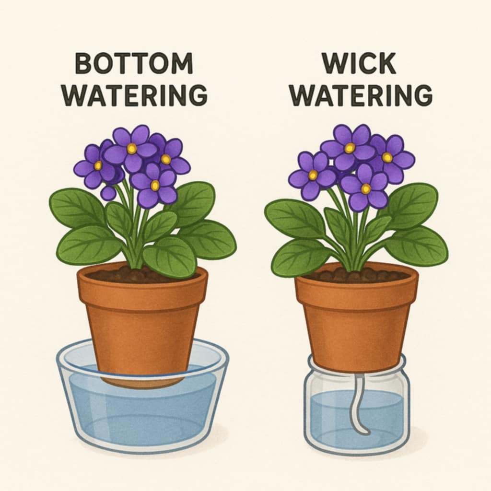
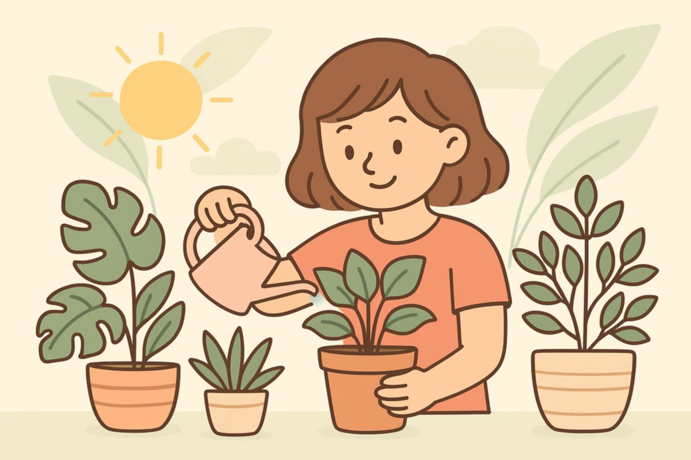
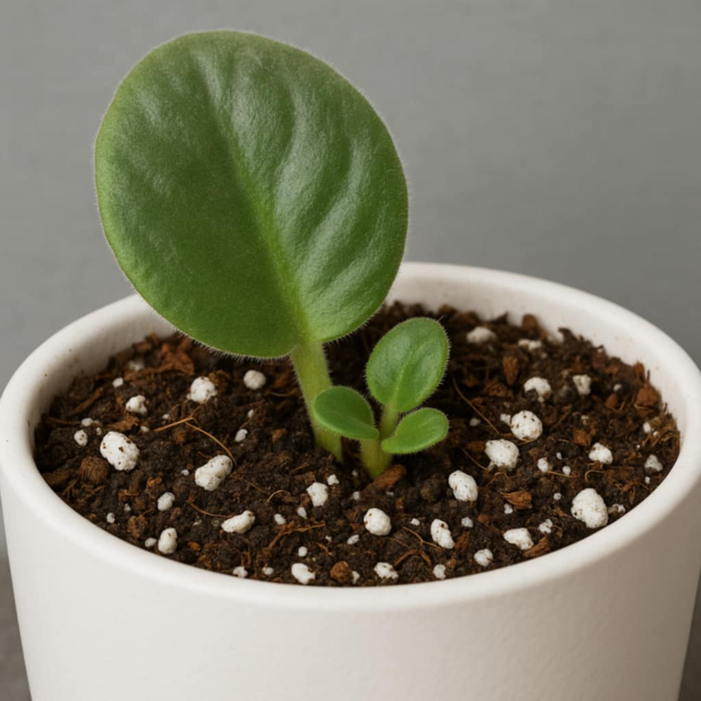
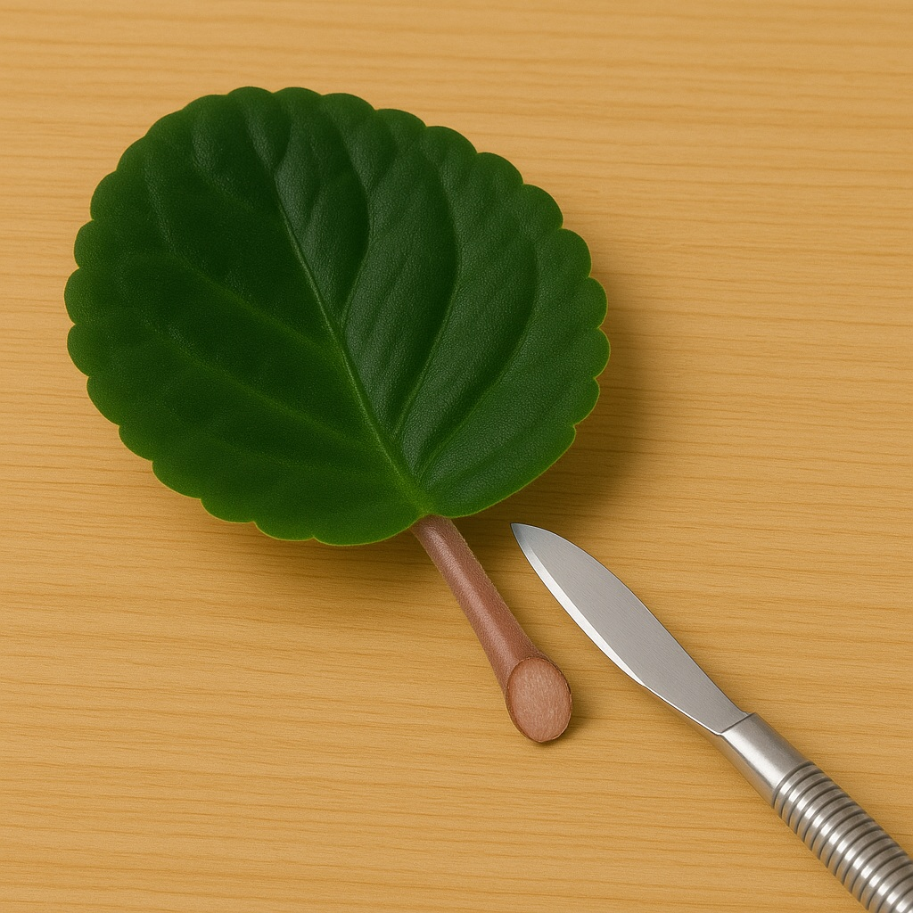
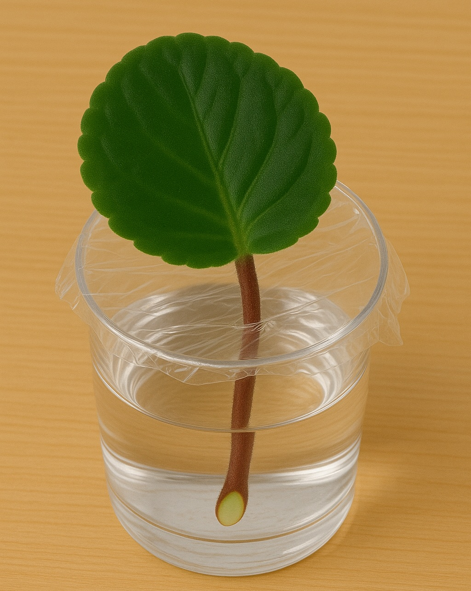
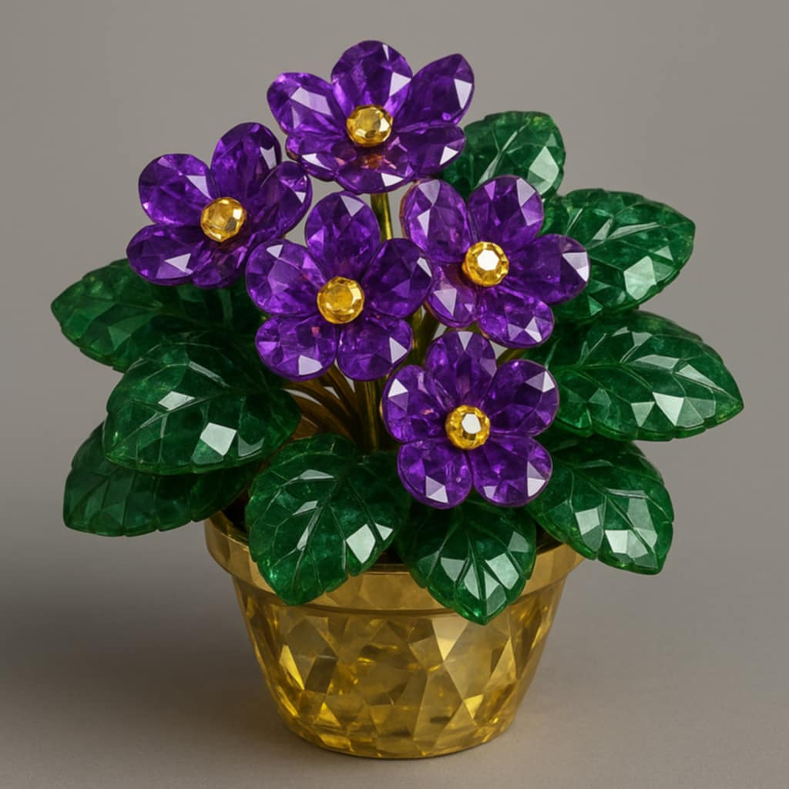
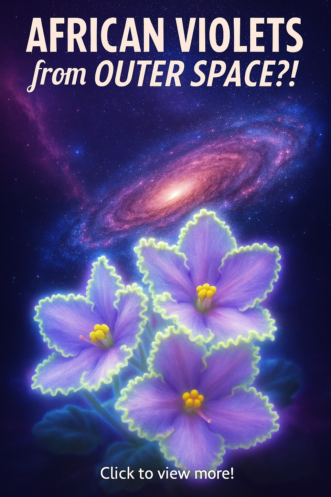
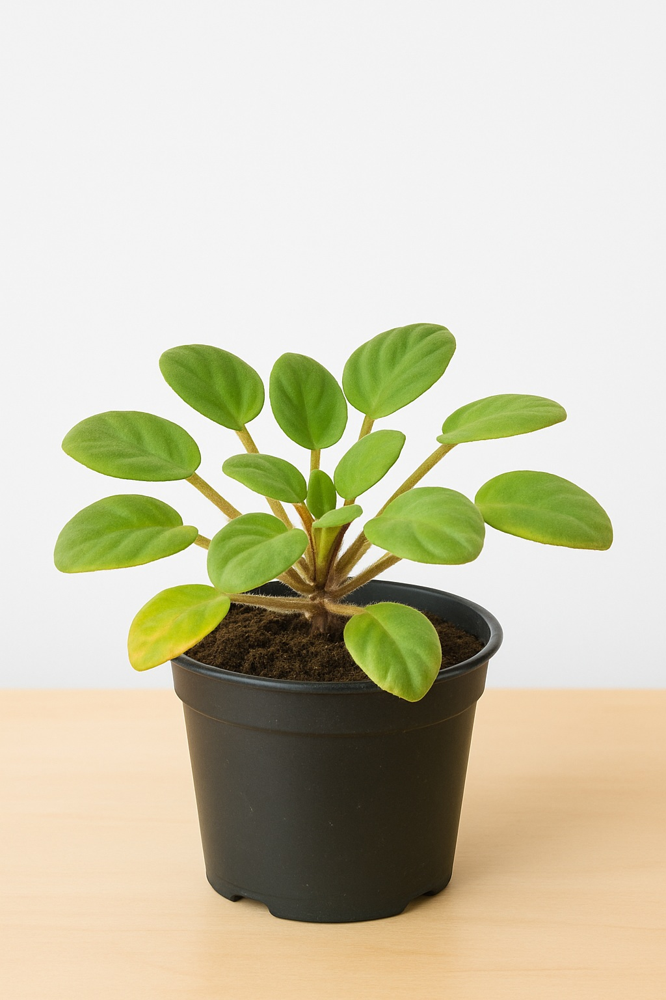
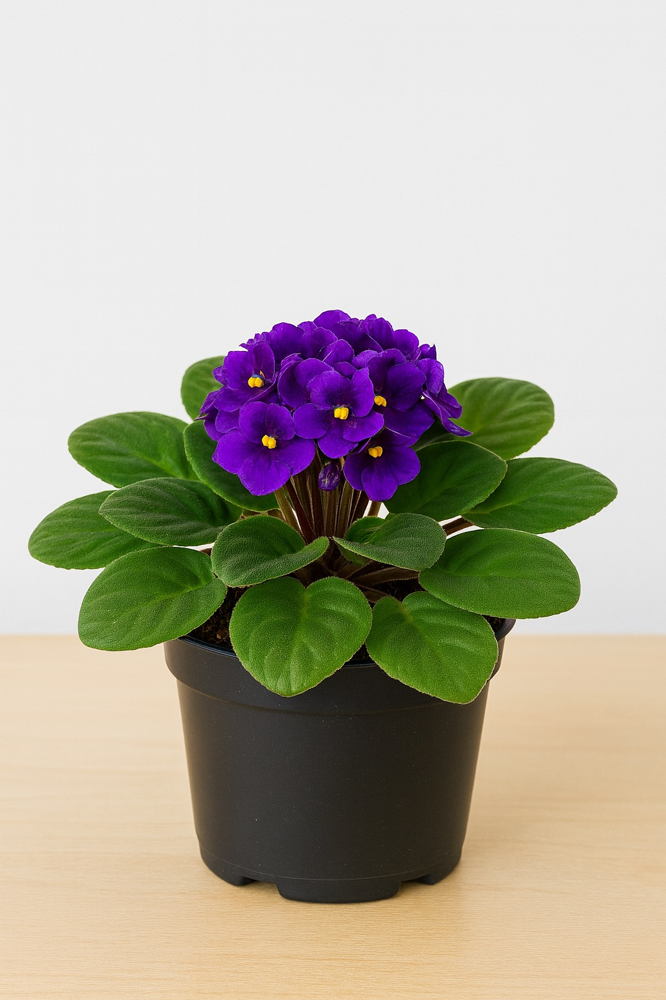
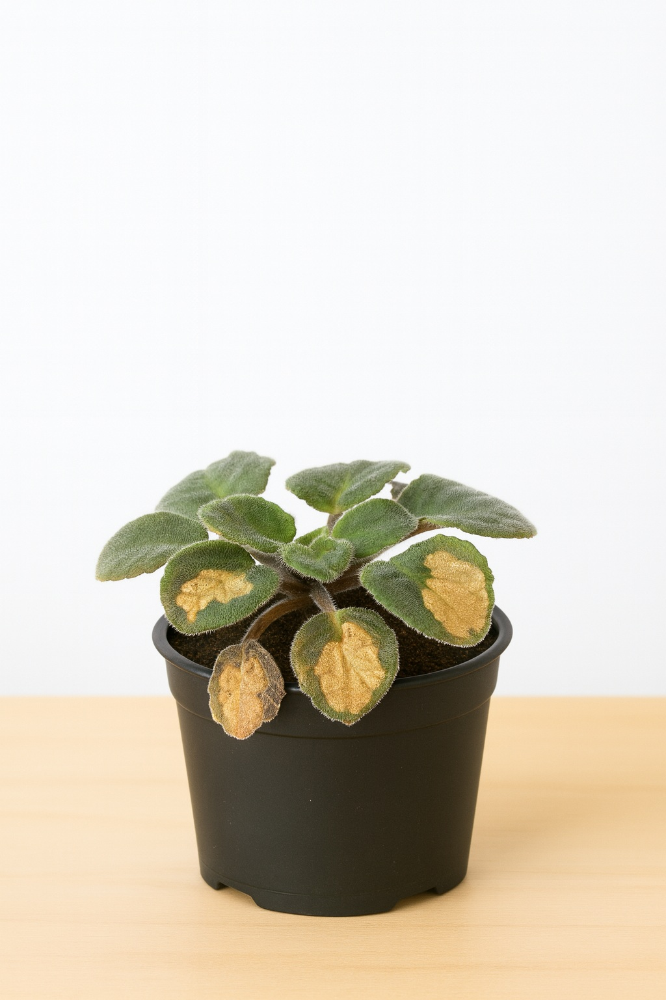

🏠 Natural Habitat
Saintpaulia, AKA African Violets, come from the mountain forests of Tanzania and Kenya. They naturally grow in cooler, humid areas where it stays around 65 to 80 degrees year-round. These spots get regular light rainfall and stay damp without being soggy. The plants grow under thick forest canopies, so they only get soft, filtered light — no harsh sun. The ground there is made up of crumbly, decaying leaves and moss, which holds moisture without compacting. That’s why African Violets do best in bright indirect light, with warm temps and light, fluffy soil that stays just barely moist.
🌞 Light Requirements
African Violets thrive in bright, indirect (filtered) light. They are sensitive to harsh direct sun, which can scorch their leaves, especially the fuzzy foliage.
- Best natural light:
East or north facing windows are ideal. East-facing provides gentle morning sun that they tolerate well. North-facing windows give even, diffused light throughout the day.
- Filtered light:
If using a south- or west-facing window, the plant must be shielded with sheer curtains or placed a few feet back from the window to prevent leaf burn.
- Direct sun tolerance:
African Violets can handle up to 1 hour of early morning direct sun, but midday and afternoon sun is too intense. Never allow them to receive direct sun from 10 a.m. to 4 p.m.
- Hours of light needed:
Aim for 10 to 12 hours of filtered light per day. If using a mix of light types, they can handle about 1 hour direct + 8 to 10 hours filtered.
- Artificial lighting:
They do very well under full-spectrum fluorescent or LED grow lights. Keep the light 12 to 15 inches above the plant and run it for 12 to 14 hours per day if there's little to no natural light. Avoid incandescent bulbs; they produce too much heat and not enough useful light.
- Signs of too little light:
Long stems or a stretched center as they stretch towards the light. Small or no blooms, and pale or floppy leaves.
- Signs of too much light:
Leaf curl, crispy leaf edges, sun-bleached patches, or leaf scorching.
- Variegated varieties:
These need slightly more light than solid green varieties. Increase filtered light exposure or raise artificial light intensity to maintain variegation without causing damage.
Regardless of the recommendations above, monitor your plant's response and adjust your approach as necessary.
💧 Watering & Feeding Guidelines
Proper watering and consistent feeding is crucial for healthy African Violets.
Watering:
- Water from the bottom to prevent leaf spotting and crown rot.
- If you choose the bottom watering method, make sure to remove the planter from the water after about 30 minutes to an hour so your plant doesn't sit in water, which can lead to root rot.
- If watering from the top, avoid getting water on the leaves, as it can cause spotting or damage, and water only the soil.
- In wick-watering setups, ensure the wick is moist and the reservoir is clean.
- Use room-temperature or lukewarm water to avoid shocking the plant.
- Check the soil every 2 to 3 days. Water when the top half-inch feels dry to the touch, or consider using a self-watering planter to maintain consistent moisture. Overwatering can lead to root rot, while underwatering causes wilting.
Feeding:
- Use a water-soluble, balanced fertilizer (e.g., 14-12-14 or 20-20-20).
- Choose a formula specifically for African Violets if available.
- If concentrated, dilute to ¼ to ½ strength to avoid fertilizer burn.
- Apply fertilizer more sparingly when using wick systems to prevent buildup, or rinse the soil (without letting water sit on the leaves) once every couple of months.
- During active growth, feed approximately every 2 to 4 weeks with a balanced, water-soluble fertilizer made for African Violets (e.g., 20-20-20).
Frequency:
African Violets typically need water every 5–7 days, depending on the size of the pot, warmth, and airflow. During active growth or under grow lights, they may dry out sooner. Feed every 2–4 weeks during the growing season. In wick-watering systems, feeding can be done monthly using a more diluted solution.


🌱 Soil Preferences
African Violets prefer:
- Well-draining, lightweight soil: Go with something loose and airy that holds a bit of moisture but doesn’t stay wet. A mix of peat moss, vermiculite, and perlite works great to keep the roots healthy and prevent the soil from packing down.
- Specialized potting mixes: If you don’t want to mix your own, look for bags labeled for African Violets. They’re already made to give the right balance of moisture, air, and nutrients.
- pH considerations: Slightly acidic soil, around 6.0 to 6.5, helps the plant take in nutrients and stay healthy.
- Skip heavy soils: Garden soil or anything dense will hold too much water and cut off airflow to the roots, which African Violets don’t handle well.
🌟 Editor's Preference:
"I’ve had the best luck using a custom mix for my African violets:
1 cup of African violet soil, 1 cup of perlite (for aeration), and ½ cup of vermiculite (for water retention).
My plants really seem to thrive in this blend. The added perlite keeps the soil light and well-draining, preventing too much water from sitting around the roots. The vermiculite helps the mix hold onto just enough moisture to keep the plant from drying out too quickly between waterings. For me, this has been the perfect balance.
That said, this mix may not work for everyone. The right soil mix depends on a lot of factors, like what type of planter you’re using, how warm your home is, how humid it stays, and how much sunlight your plant gets. You may need to experiment a little to find what works best in your space." -Lauren Green
🌡 Temperature & Humidity
Maintain a comfortable environment:
- Temperature: Keep them between 65°F and 80°F, with 70°F being ideal. Try to avoid sudden temperature drops, since that can stress the plant. Avoid going below 60°F.
- Humidity: They do best with moderate humidity, ideally 40% to 60%. If your air is dry, you can set a tray of water near the plant, group it with other plants, or run a small humidifier.
- No misting: African Violets can get spots on their leaves if water droplets sit on them, so misting isn’t a good way to raise humidity for this plant.



🌿 Propagation
African Violets are easy to propagate from leaf cuttings:
- You can propagate in water or directly in soil.
- The soil method is preferred by many (including me!) because the new plant adapts immediately to growing in soil.
- To propagate:
- With a clean, sharp pair of scissors or knife, cut a healthy leaf from the mid-section of the plant.
- Snip the leaf stem at a 45-degree angle, trimming it down to no more than 1–2 inches in length.
- Prepare the propagation method:
- Soil method: Stick the stem at a 45-degree angle into moist African Violet soil.
- Water method: Insert the stem into a small container of water.
- Place in bright, indirect light and wait for pups or roots.
- Once established, separate and replant.
🌸 Varieties & Collecting
There are so many different African Violet varieties out there, and they come in just about every combination of flower and leaf type you can imagine. Many collectors enjoy hunting for unique named cultivars, and it’s easy to see why—these plants are full of personality! Once you start collecting, it’s hard to stop.
Here are some of the fun variations you’ll find:
- Flower colors – Deep purples, bright pinks, blues, whites, reds, and even multicolored blooms with speckles, edging, or streaks. Some flowers are solid-colored, and others have contrasting centers or borders.
- Flower shapes – Single blooms, doubles, stars, wasp-shaped, fringed, or frilly petals make each variety feel unique.
- Leaf shapes – Leaves can be heart-shaped, oval, spooned, pointed, or curled. Some have a slight wave or ruffle to the edges.
- Leaf colors and patterns – From deep green to silvery green, with variegation in white, cream, pink, or even yellow. “Girl leaves” have a lighter or contrasting center that gives them a distinct look.
- Leaf textures – Smooth, fuzzy, quilted, scalloped, or velvety. Some are thick and firm, while others are soft and flexible.
- Plant sizes – Standard sizes, miniatures, semi-miniatures, and trailers that grow outward in a cascading way instead of upright.
Whether you're just growing one or filling up a shelf with different types, African Violets are a great plant to collect because there’s always something new to discover.


Did you know African Violets went to space?
In the 1980s, Optimara sent thousands of seeds into orbit, and when they came back, some had developed unique traits. These became the EverFloris line which are larger plants with nonstop blooms and ruffled leaves. They're now really popular with collectors because they’re beautiful and easy to grow.
Click the image above to read more!
🛠️ Common Problems & Fixes
| Symptom |
Possible Cause |
Suggested Fix |
| Yellowing, mushy lower leaves |
Overwatering or poor drainage |
Allow the top inch of soil to dry between waterings. Use a light, airy African violet mix and ensure the pot drains well. Remove damaged leaves. |
| Drooping or limp leaves |
Root rot or inconsistent watering |
Check for mushy roots. Repot if needed. Water with room-temperature water when the top inch of soil is dry. Avoid extremes of dry or soggy soil. |
| Pale or faded foliage with long stems |
Not enough light |
Move to a bright north or east-facing window. Leaf stems should grow short and flat under proper light. Use grow lights if needed. |
| Brown tips or leaf edges |
Low humidity or fertilizer burn |
Keep humidity around 40–60%. Use diluted African violet fertilizer monthly and avoid overfeeding. Water carefully to prevent salt buildup. |
| Crispy or curling leaves |
Too much direct sunlight |
Avoid placing in direct sun. Use sheer curtains or reposition the plant. Sunburned leaves may curl or develop crisp edges. |
| Brown, mushy crown or leaf stems |
Crown rot due to water in center |
Water from the bottom or carefully around the base. Avoid splashing water into the crown. Remove soft tissue immediately to prevent spread. |
| Leaf spots (yellow, tan, or brown) |
Water on leaves, especially if cold, or sun scorch |
Use only room-temperature water. Avoid getting leaves wet. Filter sunlight to prevent burn spots. |
| Stunted growth or no blooms |
Insufficient light or low nutrients |
Increase indirect light. Use a bloom-boosting fertilizer every 2–4 weeks. Repot annually to refresh nutrients. |
| Wilting despite moist soil |
Root rot or compacted soil |
Check roots for rot. Repot in a loose, well-draining mix. Avoid heavy or compacted soil blends. |
| Lower leaf drop or shriveled foliage |
Environmental stress or cold exposure |
Keep temperatures stable (65–80°F). Avoid cold drafts, heaters, or sudden changes in light and humidity. Remove aging or stressed leaves. |
Visual Symptoms to Help Identify Problem Conditions
 |
 |
 |
The African Violet above shows signs of
overwatering or nutrient deficiency (yellowing leaves),
and lack of light (stretching stems). |
The African Violet above appears to be
receiving the proper care with good lighting,
and proper watering and nutrients. |
The African Violet above appears to be
receiving too much direct sunlight,
and/or not enough water.
The scorched, dry-looking leaves indicate this. |
Visual Symptoms to Help Identify Problem Conditions

The African Violet above shows signs of overwatering or nutrient deficiency (yellowing leaves), and lack of light (stretching stems).
|

The African Violet above appears to be receiving the proper care with good lighting and proper watering and nutrients.
|

The African Violet above appears to be receiving too much direct sunlight and/or not enough water. The scorched leaves indicate this.
|
 Top of the page we grow!
Top of the page we grow!